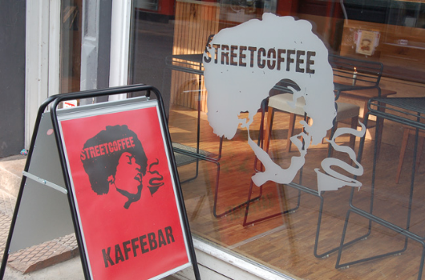
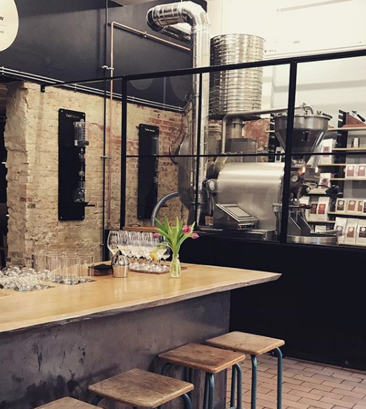
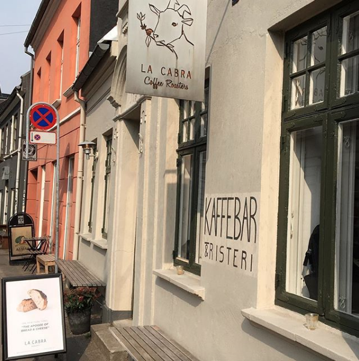

Kaffe i Aarhus
Smilets by har efterhånden mange rigtig gode steder at tage hen, hvis man er ude efter en rigtig god kop kaffe. Flere og flere steder dukker der prisvindene baristaer op. Derfor er det helt klart værd at tage et kig på nogle af de bedste kaffesteder i Aarhus.
Street coffee
Hos Street Coffee går de op i at servere den bedste kop kaffe til deres gæster. Indretningen i deres caféer er rå, og byder på hygge med musik fra grammofonen i hjørnet, hvor gæsterne selv kan sætte en plade på. Kaffebønnerne hos Street Coffee kommer fra hele verden, og bliver ristet hos et risteri i London. Udover Street Coffee byder på kaffe fra hele verden, tilbyder de også forskellige events som baggårdsmarkeder og Street Coffee Run, hvor du kan løbe tre forskellige ruter.
Adresse: Vestergade 52, 8000 Aarhus C
Link: Streetcoffee.dk
Great Coffee
Great Coffee ligger i en baggård i Århus’ latinerkvarter. Her får man straks fornemmelsen af et lækkert kafferisteri med højt til loftet. Det er nemlig ristningen af kaffebønnerne de går højt op i hos great cofee, derfor er indretningen meget rå, gæsterne sidder ved højborde og langborde lavet af rustikt træ. Great coffee har ingen lukkede døre, risteriet er åbent, så alle kan følge med i hvordan kaffeprocessen foregår. Netop denne indretning lever op til enhver kaffeentusiasts interesser, da man kan følge både ristningen og brygningen af kaffen.
Adresse: Klostergade 32 H, 8000 Aarhus C
Link: Greatcoffee.dk
La Cabra
La Cabra ligger på Graven i Århus’ idylliske latinerkvarter. Kaffebaren er kendte for deres professionelle måde at lave kaffe på, da flere af baristaerne har vundet store mesterskaber indenfor kaffekunstens verden. Caféen er stort set altid fyldt med gæster og når solen er fremme er det muligt at sidde ude foran caféen på den gamle brostensgade. Kaffebaren har deres eget risteri og går meget op i deres kaffebønners nedstamning.
Adresse: Graven 20, 8000 Aarhus C
Link: Lacabra.dk
Lynfabrikken

Lynfabrikken ligger på tredje sal i et lejlighedskompleks i en baggård på Vestergade. Her kommer du ind i et stort lokale med langborde midt i rummet og højborde ved vindueskarmene. Stedet bliver brugt af studerende og iværksættere, som sidder med deres computere og arbejder. I enden af det store lokale finder man baren, hvor der kan bestilles kaffe. Lynfabrikken går op i at holde deres café simpel og derfor består menukortet også kun af de mest klassiske kopper kaffe.
Adresse: Vestergade 49, 8000 Aarhus C
Link: Lynfabrikken.dk